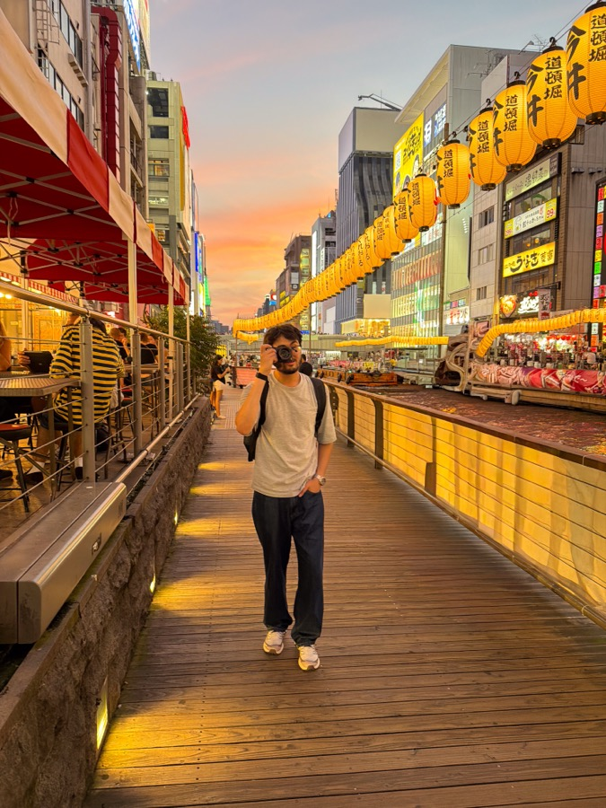

Hello!
My Name is Saaim and welcome to my small, slowly-growing corner of the internet.
my interests live in a little bit of everything —
software,
photography,
writing,
and whatever else i'm tending to lately.
I like building unnecessary things, reading more than i finish, and drinking coffee that's
probably too fussy to make on a weekday .
